EE 779: Assignment 1: Q.2
Contents
- Kalpesh Patil
- 130040019
- Q2 (a): periodogra for K = 0.01
- Q2 (b) Spectral Estimates for following methods
- (i) : AR model autocorrelation ( p = 7 )
- (ii) : AR model covariance ( p = 7 )
- (iii): MUSIC method (8*8 covariance method matrix)
- (iv) : Minimum Norm method (8*8 covariance method matrix)
- All plots combined
- Comparison of different methods
Kalpesh Patil
130040019
close all clear all % read input data I01 = getdata('../assgn3_data/I01.dat')'; I10 = getdata('../assgn3_data/I10.dat')'; I40 = getdata('../assgn3_data/I40.dat')'; R01 = getdata('../assgn3_data/R01.dat')'; R10 = getdata('../assgn3_data/R10.dat')'; R40 = getdata('../assgn3_data/R40.dat')'; x01 = R01 + I01*1i; x10 = R10 + I10*1i; x40 = R40 + I40*1i; x_list = [x01,x10,x40]; k_list = [0.01,0.10,0.40];
Q2 (a): periodogra for K = 0.01
Note that complex exponentials are used in input signal hence plots are shown for -pi to pi instead of just 0 to pi
fft_len = 1024; N = length(x01); % zero padding signal x_padded = zeros(fft_len,1); x_padded(1:N) = x01(1:N); fft_xN = fftshift(fft(x_padded, fft_len)); freq = linspace(-pi,pi,fft_len); prdgrm_psd_x01 = (abs(fft_xN).^2)/N; fig = figure; plot(freq,10*log10(prdgrm_psd_x01)); title('PSD estimate of x01 periodogram method'); xlabel('w'); ylabel('PSD(dB)') set(gcf, 'Position', get(0, 'Screensize')); set(gca,'xtick',[-pi,0,3*pi/8,pi/2,5*pi/8,pi]); set(gca,'xgrid','on'); saveas(fig,'../results/Q2/PSD estimate of x01 periodogram method','jpg');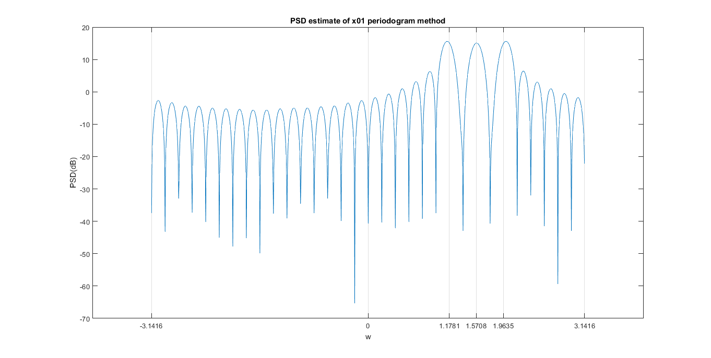
Q2 (b) Spectral Estimates for following methods
(i) : AR model autocorrelation ( p = 7 )
function [psd_AR,freq] = AR_autocorrelation_spectrum(x,p,K) r = find_correlation(x); [X,Rxx_autocorr_AR] = corrmtx(x,p,'autocorrelation'); %Rxx_autocorr_AR = X'*X; temp = Rxx_autocorr_AR(2:end,2:end); r_AR = -r(2:p+1); a_AR = temp\r_AR; a_AR = [1,a_AR.'].'; error_sq_AR = 0; for j = 1:p+1 error_sq_AR = error_sq_AR + a_AR(j)*conj(r(j)); end error_AR = sqrt(abs(error_sq_AR)); [h,w] = freqz(error_AR,a_AR,'whole',1024); psd_AR = abs(fftshift(h)).^2; freq = w - pi; end
for k = 1:length(k_list) x = x_list(:,k); [AR_autocorr_psd,freq] = AR_autocorrelation_spectrum(x,7,k_list(k)); fig = figure; plot(freq,10*log10(AR_autocorr_psd)); title(['PSD estimate Autocorrelation method x',num2str(k_list(k))]); xlabel('w'); ylabel('PSD(dB)'); set(gcf, 'Position', get(0, 'Screensize')); set(gca,'xtick',[-pi,0,3*pi/8,pi/2,5*pi/8,pi]); set(gca,'xgrid','on'); saveas(fig,['../results/Q2/','PSD estimate Autocorrelation method x',num2str(k_list(k))],'jpg'); end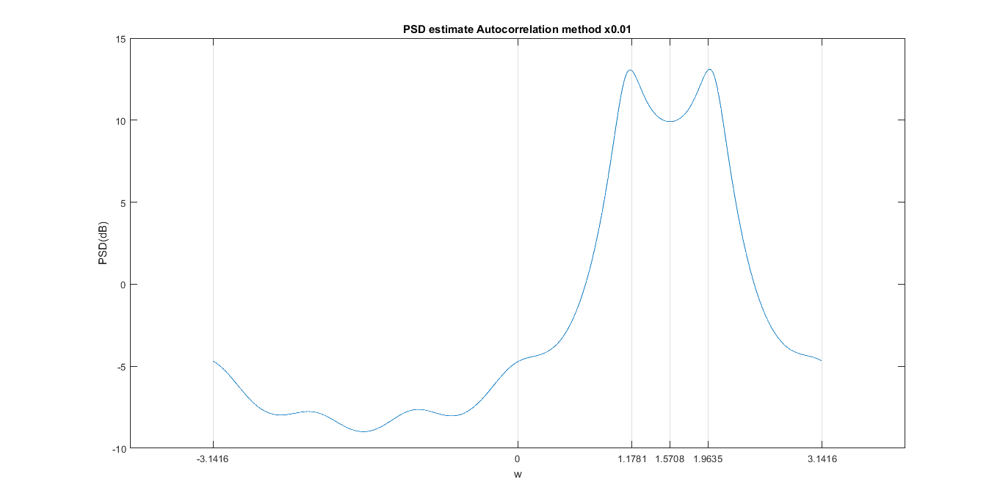 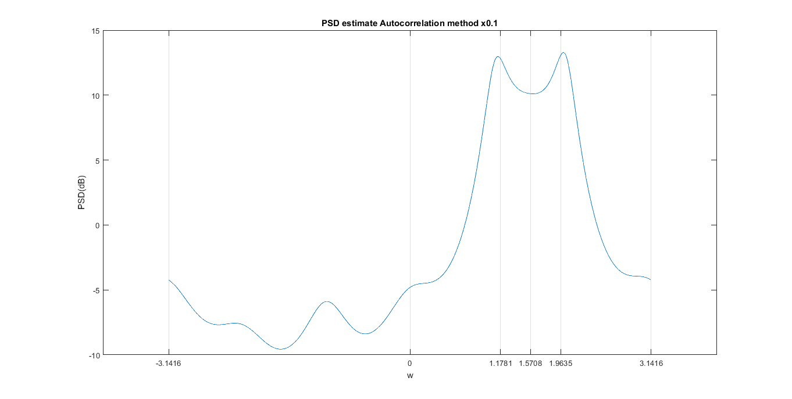 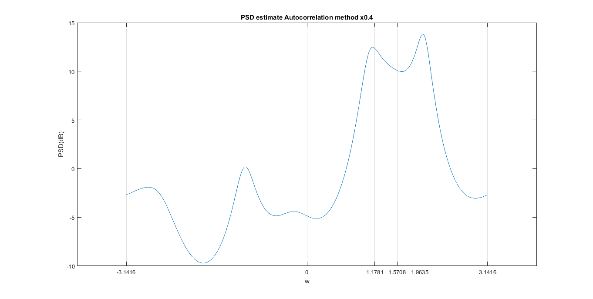
(ii) : AR model covariance ( p = 7 )
function [psd_covar,freq] = AR_covariance_spectrum(x,p,K) N = length(x); X = corrmtx(x,p,'covariance'); Rxx_covar = X'*X; temp = Rxx_covar(2:length(Rxx_covar),2:length(Rxx_covar)); r_covar = -Rxx_covar(2:end,1); a_covar = inv(temp)*r_covar; a_covar = [1,a_covar.'].'; error_sq_covar = 0; for j = 1:p+1 error_sq_covar = error_sq_covar + a_covar(j)*conj(Rxx_covar(j,1)); end error_covar = sqrt(abs(error_sq_covar)); [h,w] = freqz(1,a_covar,'whole',1024); psd_covar = abs(fftshift(h)).^2; freq = w - pi; end
for k = 1:length(k_list) x = x_list(:,k); [AR_covar_psd,freq] = AR_covariance_spectrum(x,7,k_list(k)); fig = figure; plot(freq,10*log10(AR_covar_psd)); title(['PSD estimate covariance method x',num2str(k_list(k))]); xlabel('w'); ylabel('PSD(dB)'); set(gcf, 'Position', get(0, 'Screensize')); set(gca,'xtick',[-pi,0,3*pi/8,pi/2,5*pi/8,pi]); set(gca,'xgrid','on'); saveas(fig,['../results/Q2/','PSD estimate covariance method x',num2str(k_list(k))],'jpg'); end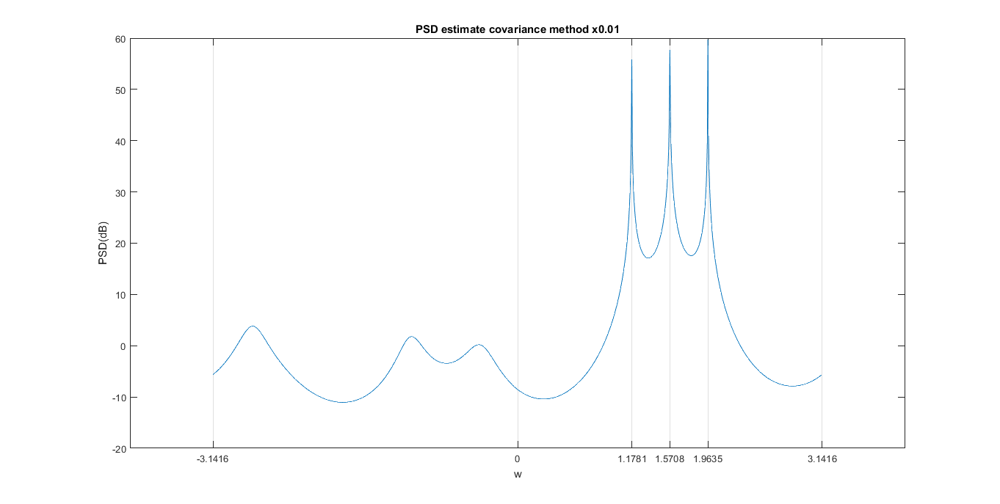 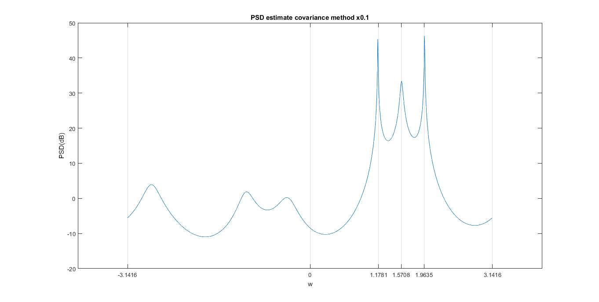 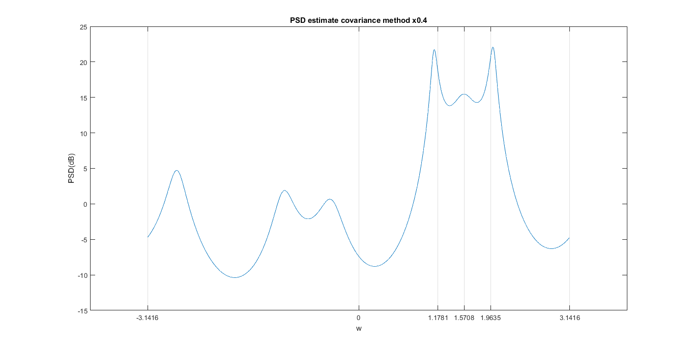
(iii): MUSIC method (8*8 covariance method matrix)
function [MUSIC_psd,freq] = MUSIC_spectrum(x,M,P,K) N = length(x); Rxx_covar = zeros(M+1,M+1); for i = 0:M for j = 0:M sum = 0; for n = M+1:N sum = sum + x(n-j)*conj(x(n-i)); end Rxx_covar(j+1,i+1) = sum; end end X = corrmtx(x,M,'covariance'); Rxx_covar = X'*X; M = length(Rxx_covar(:,1)); [V,lambda] = eig(Rxx_covar); spectrum_len = 1024; freq = linspace(-pi,pi,spectrum_len); sum_denom = zeros(1,spectrum_len); for j = 1:length(freq) w = freq(j); sum_temp = 0; for i = 1:M-P v_i = V(:,i); temp = 0; for k = 1:M temp = temp + (exp(-1i*(k-1)*w))*v_i(k); end sum_temp = sum_temp + (abs(temp))^2; end sum_denom(j) = sum_temp; end MUSIC_psd = 1./sum_denom; MUSIC_psd = MUSIC_psd'; end
for k = 1:length(k_list) x = x_list(:,k); [MUSIC_psd,freq] = MUSIC_spectrum(x,7,3,k_list(k)); fig = figure; plot(freq,10*log10(MUSIC_psd)); title(['PSD estimate MUSIC method x',num2str(k_list(k))]); xlabel('w'); ylabel('PSD(dB)'); set(gcf, 'Position', get(0, 'Screensize')); set(gca,'xtick',[-pi,0,3*pi/8,pi/2,5*pi/8,pi]); set(gca,'xgrid','on'); saveas(fig,['../results/Q2/','PSD estimate MUSIC method x',num2str(k_list(k))],'jpg'); end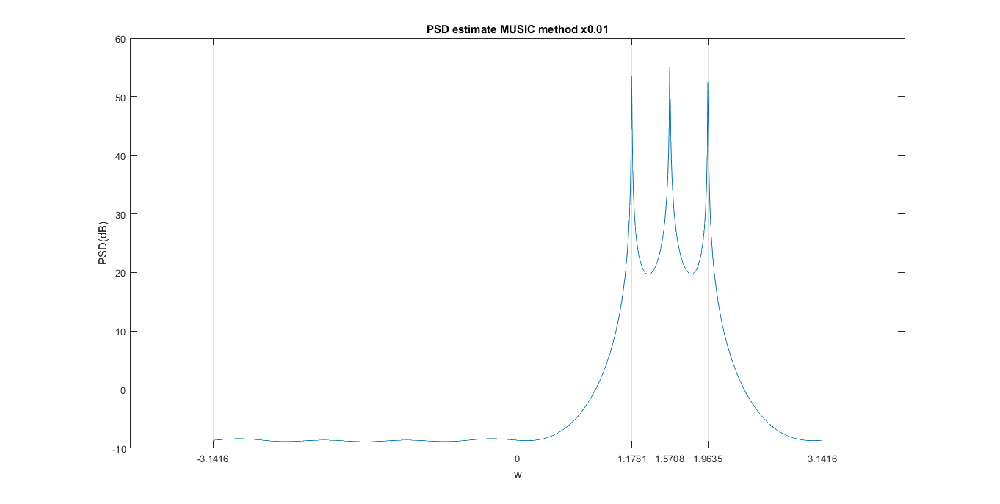 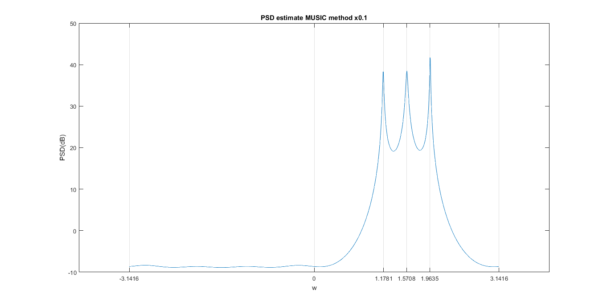 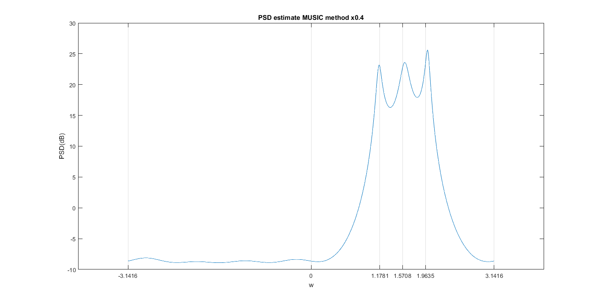
(iv) : Minimum Norm method (8*8 covariance method matrix)
function [minimum_norm_psd,freq] = minimum_norm_spectrum(x,M,P,K) N = length(x); Rxx_covar = zeros(M+1,M+1); for i = 0:M for j = 0:M sum = 0; for n = M+1:N sum = sum + x(n-j)*conj(x(n-i)); end Rxx_covar(j+1,i+1) = sum; end end X = corrmtx(x,M,'covariance'); Rxx_covar = X'*X; M = length(Rxx_covar(:,1)); [V,lambda] = eig(Rxx_covar); V_noise = V(:,1:M-P); u = zeros(1,M)'; u(1) = 1; num = (V_noise*V_noise')*u; den = u'*(V_noise*V_noise')*u; a = num./den; spectrum_len = 1024; freq = linspace(-pi,pi,spectrum_len); sum_denom = zeros(1,spectrum_len); for j = 1:length(freq) w = freq(j); sum_temp = 0; for k = 1:M sum_temp = sum_temp + (exp(-1i*(k-1)*w))*a(k); end sum_denom(j) = (abs(sum_temp))^2; end minimum_norm_psd = 1./sum_denom; minimum_norm_psd = minimum_norm_psd'; end
for k = 1:length(k_list) x = x_list(:,k); [minimum_norm_psd,freq] = minimum_norm_spectrum(x,7,3,k_list(k)); fig = figure; plot(freq,10*log10(minimum_norm_psd)); title(['PSD estimate minimum norm method x',num2str(k_list(k))]); xlabel('w'); ylabel('PSD(dB)'); set(gcf, 'Position', get(0, 'Screensize')); set(gca,'xtick',[-pi,0,3*pi/8,pi/2,5*pi/8,pi]); set(gca,'xgrid','on'); saveas(fig,['../results/Q2/','PSD estimate minimum norm method x',num2str(k_list(k))],'jpg'); end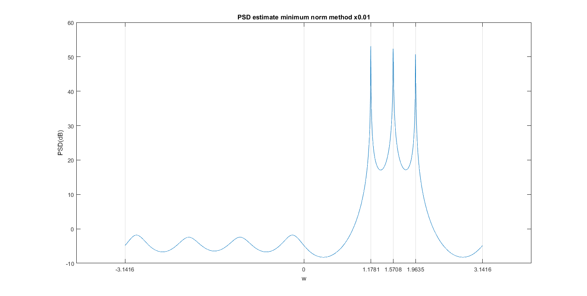 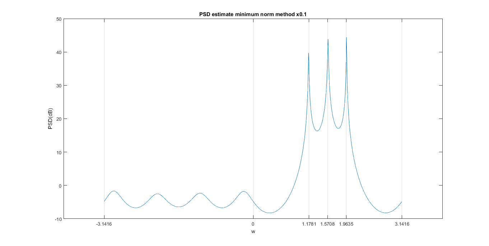 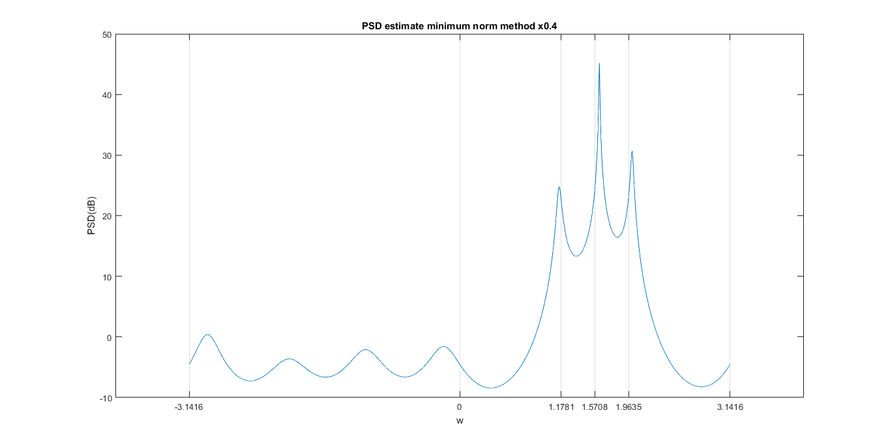
All plots combined
Here all the plots are scaled for comparison.
for k = 1:length(k_list) x = x_list(:,k); [AR_autocorr_psd,freq] = AR_autocorrelation_spectrum(x,7,k_list(k)); AR_autocorr_psd= (AR_autocorr_psd-min(AR_autocorr_psd))./(max(AR_autocorr_psd)-min(AR_autocorr_psd)); [AR_covar_psd,freq] = AR_covariance_spectrum(x,7,k_list(k)); AR_covar_psd = (AR_covar_psd-min(AR_covar_psd))./(max(AR_covar_psd)-min(AR_covar_psd)); [MUSIC_psd,freq] = MUSIC_spectrum(x,7,3,k_list(k)); MUSIC_psd = (MUSIC_psd-min(MUSIC_psd))./(max(MUSIC_psd)-min(MUSIC_psd)); [minimum_norm_psd,freq] = minimum_norm_spectrum(x,7,3,k_list(k)); minimum_norm_psd = (minimum_norm_psd-min(minimum_norm_psd))./(max(minimum_norm_psd)-min(minimum_norm_psd)); prdgrm_psd_x01 = (prdgrm_psd_x01 - min(prdgrm_psd_x01))./(max(prdgrm_psd_x01)-min(prdgrm_psd_x01)); all_plots = 10*log([prdgrm_psd_x01,AR_autocorr_psd,AR_covar_psd,MUSIC_psd,minimum_norm_psd]); fig = figure; plot(freq,all_plots); title(['Relative PSD plots for x',num2str(k_list(k))]); xlabel('w'); ylabel('PSD(dB)'); lgnd = legend('Periodogram (base)','AR autocorrelation','AR covariance','MUSIC','Minimum norm'); lgnd.Orientation = 'horizontal'; lgnd.Location = 'south'; set(gcf, 'Position', get(0, 'Screensize')); set(gca,'xtick',[-pi,0,3*pi/8,pi/2,5*pi/8,pi]); set(gca,'xgrid','on'); saveas(fig,['../results/Q2/','Relative PSD plots for x',num2str(k_list(k))],'jpg'); end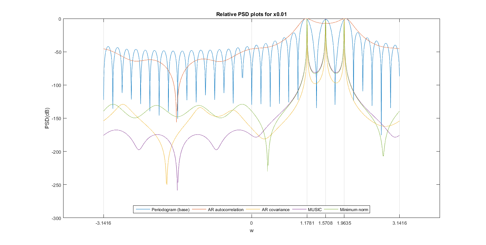
 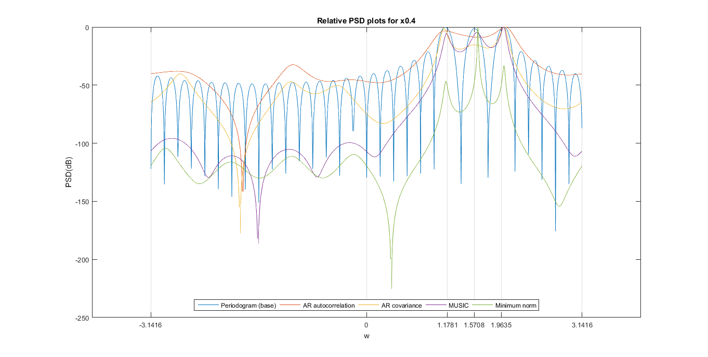
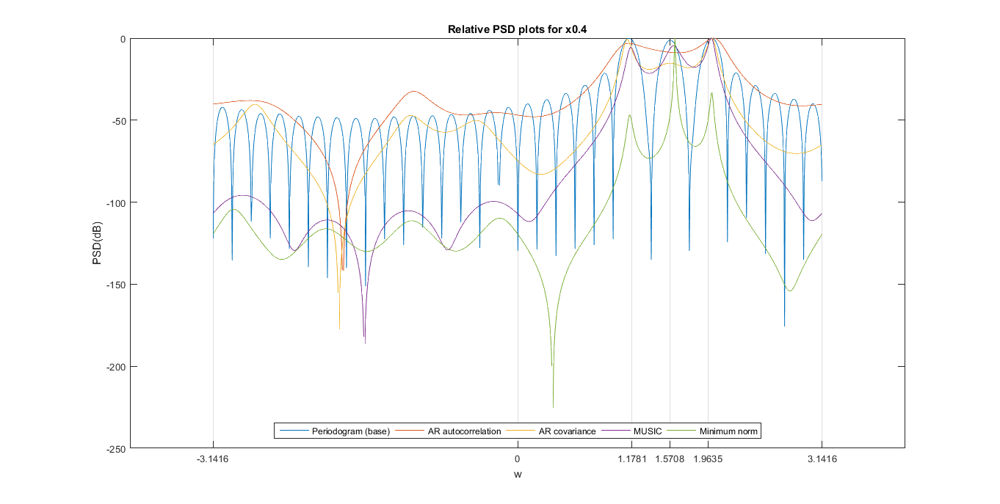 Comparison of different methods
- AR autocorrelation method is not able to capture all three frequencies for any value of noise. It is not suitable for distinguishing closely spaced frequencies.
- For the lesser values of noise (0.01), AR covariance, MUSIC and minimum norm all three work well and produce peaks at given frequencies
- For the larger values of noise (0.4), AR covarianc is not able to capture the middle peak. Also the quality of peaks produced MUSIC method decreases. Minimum norm method prodcues better peaks compared to others for higher values of noise
- We also observe deviation of peaks from ideal input frequencies (which are displayed as vertical lines in PSD plots). The deviation is observed to increase as noise increases. Deviation from actual frequencies: Minimum norm < MUSIC < AR covariance < AR autocorrelation
- Energy in sidelobes (bands other other than peaks) can also be compared to observe quality of peaks. Quality of peaks degrade with amount of noise. Also it depends on different methods. Energy in sidelobes: Minimum norm < MUSIC < AR covariance < AR autocorrelation
- Overall performance for frequency estimation in line spectrum is: Minimum norm > MUSIC > AR covariance > AR autocorrelation